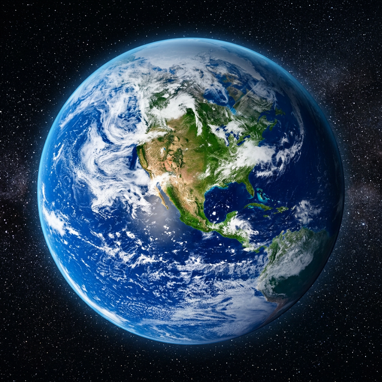

Earth
The Blue Marble – Our Home World
Earth is the third planet from the Sun and the only known astronomical object in the universe confirmed to harbor life. With its dynamic atmosphere, vast oceans, and diverse ecosystems, Earth is truly unique. Our planet has a protective magnetic field that shields us from solar radiation, and its position in the Sun's habitable zone means liquid water can exist on the surface. Earth is about 4.5 billion years old and is constantly changing through plate tectonics, weather, and life.
| Property | Value |
|---|---|
| Diameter | 12,742 km |
| Distance from Sun | 149.6 million km |
| Orbital Period | 365.25 days |
| Day Length | 24 hours |
| Surface Temp. | -88°C to 58°C |
| Moons | 1 (The Moon) |
| Type | Terrestrial (Rocky) |
Fascinating Facts
- 💧 71% of Earth's surface is covered by water — most of it in the oceans.
- 🌍 Earth is the densest planet in the Solar System.
- 🛡️ Earth's magnetic field protects us from harmful solar wind particles.
- 🌕 Earth has one Moon that stabilizes our planet's axial tilt and influences tides.
- 🌿 Earth is the only planet known to support life, with millions of species.